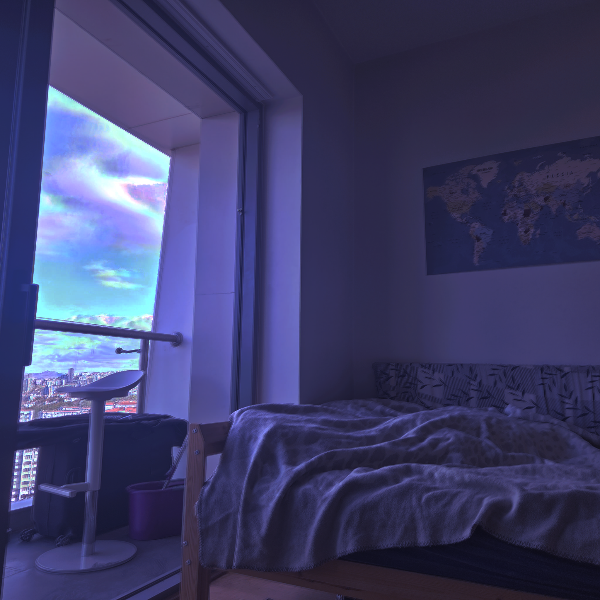
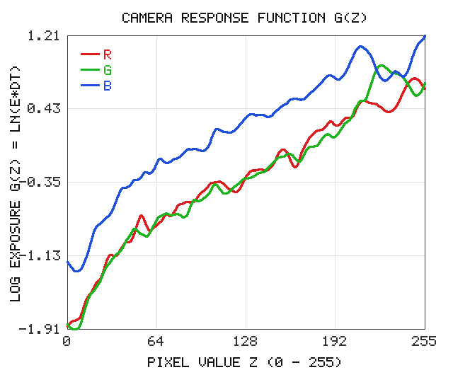

Hello, my name is Şükrü Çiriş. In this blog, i will explain you my HDR homework 1. Standard digital cameras capture the real scenes with a very limited brightness range. Every color channel is stored between 0 and 255. However, real outdoor and indoor places have much larger light differences between dark corners and bright areas near the lamps. Because of this limit, a single photo often has completely white sky or black shadows.
Debevec and Malik model this problem by combining several photos which taken with different exposure times. Suppose we have a set of normal photos from the same scene. When exposure time is changed step by step, different brightness parts are captured clearly in each photo. Camera sensors don't convert incoming light energy into pixel values in a linear way. Instead, non-linear processing is applied inside the camera before saving the image: this curve is called as the camera response function. First, logarithmic camera response curve is found from selected pixels, than full HDR radiance map is built.
In the paper, each pixel value Z is related to scene irradiance E multiplied by exposure time dt. Here, dt is the shutter time of each photo. Because the camera sensor curve is monotonic, its inverse function exists and we can take the natural logarithm of both sides. So, the main equation becomes g(Z) = ln(E) + ln(dt), where both the curve values g(Z) and pixel irradiances ln(E) are unknown.
In this setup, there is two unknown parts in the linear system. How can we find both of them from pixel values? These unknowns are calculated by minimizing a least squares objective function with a smoothness weight lambda. Also, a hat weight function w(z) is used because pixel values near 0 and 255 are saturated and noisy, so middle values around 128 get the highest weight. Finally, g(128) = 0 is fixed as a constraint so the curve stays in place.
For Option 1, the algorithm was coded in C++ without external matrix libraries. Every input photo is loaded
into a 8-bit RGB array with stb_image and saved as an HDR file with
stb_image_write. Here, 100 sample pixels are chosen with equal steps. In
ResponseCurveSolver, the overdetermined matrix A is solved by Householder QR decomposition
instead of normal equations. When we know the response curve for red, green and blue channels, original HDR
image is obtained by combining all exposures with their weights.
During the implementation of the Debevec algorithm, several difficulties were faced. First, putting the
data equations, smoothness second-derivative terms and the g(128) = 0 constraint into one big matrix A was
quite confusing. In early tries, the column index for log irradiance was wrong, so j. image's i. pixel was
matched with the wrong row. Second, the exposure times were not written inside the shared image files.
Different exposure steps like powers of two (1, 2, 4, 8) and 1, 2, 3, 4 were tried in main.cpp,
but increasing the exposure by 0.5 at each step gave much cleaner curves. Third, choosing sample pixels from
only one part of the image left empty gaps in the curve, so uniform stride across the whole image was used.
Another big problem happened during the radiance map step. In the paper, the hat weight function gives zero weight to 0 and 255. However, in very bright spots like lamps or windows, a pixel can be 255 in every single photo of the sequence. When all weights became zero for that pixel, dividing by total weight caused a division-by-zero error and left black NaN dots on the HDR image. To fix this bug, +1 was added to the weight formula so it doesn't touch zero while a middle exposure fallback was also added.
Proposed method is tested on eleven exposure folders. Here, linear color values stays in [0, 1] range. In
virtual_camera_srgb folder, pixel values follow the standard sRGB curve, which uses a simple
formula with a power function in its upper part. This camera mapping doesn't touch the scene radiance ratio.
The recovered curve from virtual_camera_srgb matches with the ground truth shape, while noisy
folders were experimented to see how noise bends the curve.
Real camera sequences from Nikon D2H, Nikon Coolpix E5400, Minolta DiMAGE A1 and Canon EOS 550D were also tested. The three color channel solvers are linked together in a loop. In these real scenes, scene brightness has more than four orders of magnitude between dark shadows and bright windows, where brightest areas were brightened by 8000 times compared to the darkest parts. If the sample count or image count would be chosen much higher, the matrix A is too big for fast QR solving and running time reaches to several seconds. In the tests, CRF recovery took around 2.3 to 4.9 seconds, while radiance map creation took longer on high-resolution Canon EOS 550D photos.
| Sequence Folder | Image Count | CRF Recovery (ms) | Radiance Map (ms) | Total Runtime (ms) |
|---|---|---|---|---|
| Nikon_D2H | 9 | 3003.10 | 2396.09 | 5399.20 |
| Nikon_Coolpix_E5400 | 16 | 4888.76 | 5040.41 | 9929.17 |
| Minolta_DiMAGE_A1 | 13 | 4017.39 | 1574.19 | 5591.58 |
| Canon_EOS_550D | 9 | 2922.32 | 10641.87 | 13564.19 |
| virtual_camera_linear | 7 | 2348.85 | 505.29 | 2854.15 |
| virtual_camera_srgb | 9 | 2907.52 | 619.13 | 3526.65 |
| virtual_camera_noise25 | 9 | 2958.02 | 624.54 | 3582.55 |
| virtual_camera_noise50 | 9 | 2930.47 | 626.54 | 3557.01 |
| virtual_camera_noise100 | 9 | 2934.28 | 626.41 | 3560.68 |
| virtual_camera_noise150 | 9 | 2912.92 | 620.22 | 3533.13 |
| GalaxyS25 | 9 | 2903.56 | 2520.96 | 5424.52 |
For the phone experiment, 9 photos with different exposures were taken with a Samsung Galaxy S25 camera. A tripod was not used in this test. The phone was held by hand as steady as possible, so the frames weren't aligned completely while exposure values were changed manually from +2 to -2 with 0.5 steps. Then, the photos were sent to the computer over WhatsApp. Even with small hand movement and WhatsApp compression, the algorithm recovered a smooth S-shaped response curve for the phone.

